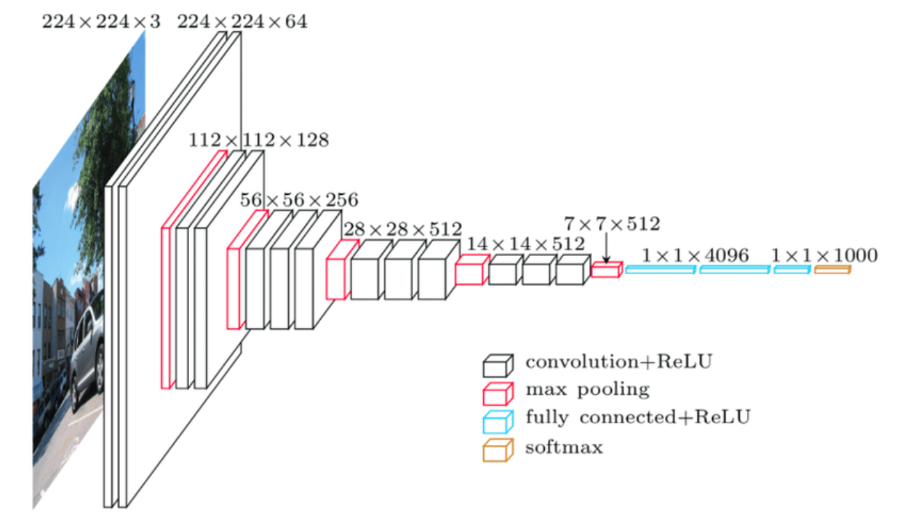
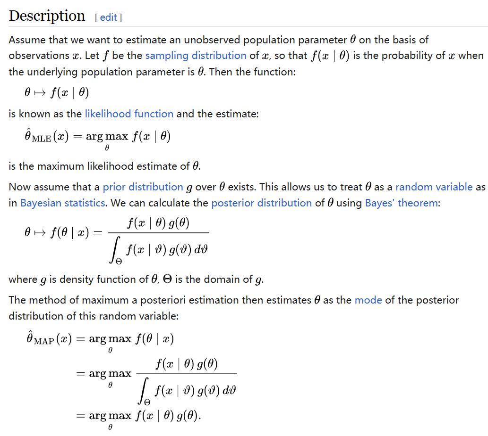

This paper proposes a two-stage localization mechanism in city-scale NeRF.
Abstract
Neural Radiance Fields (NeRFs) have made great success in representing complex 3D scenes with high-resolution details and efficient memory. Nevertheless, current NeRF-based pose estimators have no initial pose prediction and are prone to local optima during optimization. In this paper, we present LATITUDE: Global Localization with Truncated Dynamic Low-pass Filter, which introduces a two-stage localization mechanism in city-scale NeRF.
In place recognition stage, we train a regressor through images generated from trained NeRFs, which provides an initial value for global localization.
In pose optimization stage, we minimize the residual between the observed image and rendered image by directly optimizing
the pose on the tangent plane.To avoid falling into local optimum, we introduce a Truncated Dynamic Low-pass Filter (TDLF) for coarse-to-fine pose registration.
We evaluate our method on both synthetic and real-world data and show its potential applications for high-precision navigation in large scale city scenes.
System Design

- Place Recognition
- Original poses, accompanied by additional poses around the original ones are sampled.
- The pose vector is passed through the trained and fixed Mega-NeRF with shuffled appearance embeddings.
- Initial poses of the inputted images are predicted by a pose regressor network.
- Pose Optimization
- The initial poses are passed through positional encoding filter
- The pose vector is passed through the trained and fixed Mega-NeRF and generates a rendered image.
- Calculate the photometric error of the rendered image and the observed image and back propagate to get a more accurate pose with the TDLF.
Implementation
Place Recognition
Data Augmentation: A technique in machine learning used to reduce overfitting when training a machine learning model by training models on several slightly-modified copies of existing data.
First uniformly sample several positions in a horizontal rectangle area around each position around original poses . Then add random perturbations on each axis drawn evenly in , where is the max amplitude of perturbation to form sampled poses . They are used to generate the rendered observations by inputting the poses to Mega-NeRF.
To avoid memory explosion, we generate the poses using the method above and use Mega-NeRF to render images during specific epochs of pose regression training.
Additionally, Mega-NeRF’s appearance embeddings are selected by randomly interpolating those of the training set, which can be considered as a data augmentation technique to improve the robustness of the APR model under different lighting conditions.

Pose Regressor: Absolute pose regressor (APR) networks are trained to estimate the pose of the camera given a captured image.
Architecture: Built on top of VGG16’s light network structure, we use 4 full connection layers to learn pose information from image sequences.
Input: Observed image (resolution ), rendered observations
Output: Corresponding estimated poses , .
Loss Function: (In general, the model should trust more on real-world data and learn more from it.)
Pose Optimization
MAP Estimation Problem[A] Formulation:
Here denotes place recognition; denotes the trained Mega-NeRF.
We optimize posterior by minimizing the photometric error of and the image rendered by .
Optimization on Tangent Plane: We optimize pose on tangent plane to ensure a smoother convergence. [1]
TODOI know nothing about :(
Explanations & References
[1]Adamkiewicz, M., Chen, T., Caccavale, A., Gardner, R., Culbertson, P., Bohg, J., & Schwager, M. (2022). Vision-only robot navigation in a neural radiance world. IEEE Robotics and Automation Letters, 7(2), 4606-4613. https://arxiv.org/pdf/2110.00168.pdf
Turki, H., Ramanan, D., & Satyanarayanan, M. (2022). Mega-nerf: Scalable construction of large-scale nerfs for virtual fly-throughs. In Proceedings of the IEEE/CVF Conference on Computer Vision and Pattern Recognition (pp. 12922-12931). https://arxiv.org/pdf/2112.10703.pdf
Yen-Chen, L., Florence, P., Barron, J. T., Rodriguez, A., Isola, P., & Lin, T. Y. (2021, September). inerf: Inverting neural radiance fields for pose estimation. In 2021 IEEE/RSJ International Conference on Intelligent Robots and Systems (IROS) (pp. 1323-1330). IEEE. https://arxiv.org/pdf/2012.05877.pdf
[A]Maximum A Posterior (MAP) Estimation: Maximum a posteriori (MAP) estimation is a method of statistical inference that uses Bayes’ theorem to find the most likely estimate of a parameter given some observed data.
